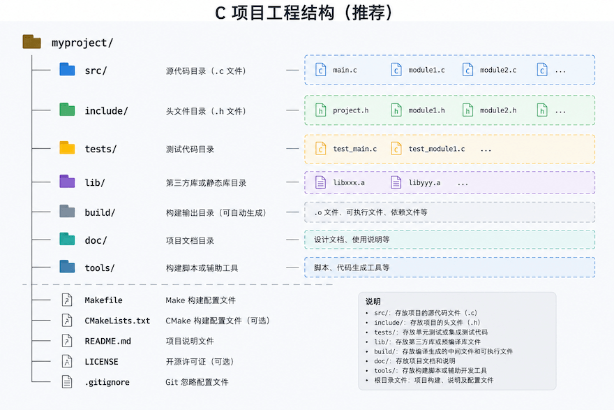
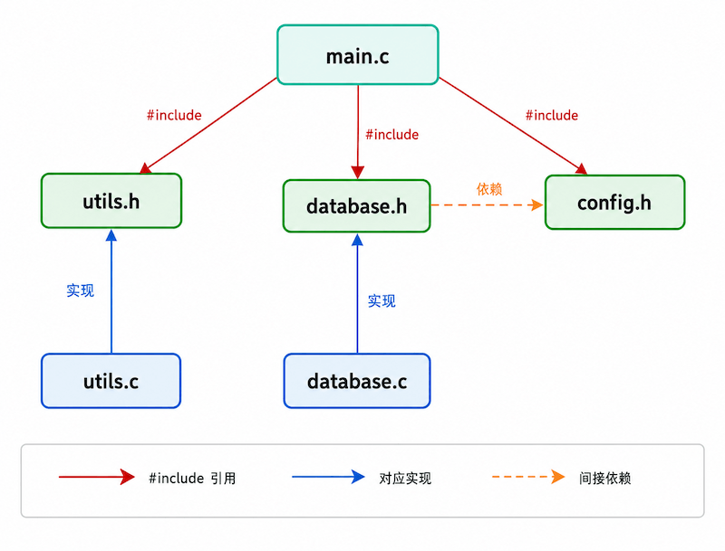

Estructura de proyectos en C
La estructura de proyectos en C se refiere a la manera de organizar en directorios el código fuente, los archivos de cabecera, los scripts de compilación y los archivos de recursos de un proyecto C.
Una estructura de proyecto clara y estandarizada permite que los grandes proyectos en C sean fáciles de mantener, facilita la colaboración de múltiples desarrolladores y simplifica los procesos de compilación e implementación.
¿Por qué se necesita una estructura de proyecto estándar?
Cuando los principiantes escriben código C, a menudo apilan todos los archivos en un directorio, lo que genera graves problemas cuando el proyecto crece.
Archivos de cabecera duplicados, conflictos de nombres, compilación lenta y dificultad para localizar código: este desorden acaba haciendo que el proyecto sea difícil de mantener.
Una estructura de directorios convencional te ayuda a ti y a los miembros del equipo a comprender rápidamente el panorama completo del proyecto, y también permite que herramientas de compilación automatizadas como Make y CMake funcionen de manera eficiente.
Estructura de directorios estándar
A continuación se presenta una estructura de directorios recomendada para un proyecto C típico, adecuada para proyectos medianos y pequeños.
Cada directorio tiene responsabilidades claras y una jerarquía bien definida:

Explicación detallada de los directorios principales
A continuación se detallan las responsabilidades y las mejores prácticas de cada directorio.
src/ — directorio de código fuente
Almacena todos los.carchivos fuente, divididos en varios archivos según el módulo.
Cada módulo tiene un archivo .c; el nombre del archivo corresponde a su función para facilitar la localización rápida.
Función de entradamain()Generalmente se coloca en main.c, sin mezclar lógica de negocio.
Ejemplo
#include "utils.h" /* Archivo de cabecera de funciones de utilidad personalizadas */
#include "database.h" /* Archivo de cabecera para operaciones de base de datos */
#include <stdio.h> /* Entrada y salida estándar */
int main(int argc, char *argv[]) {
/* argc: número de argumentos de la línea de comandos, argv: vector de argumentos */
printf("RUNOOB C inicio del proyecto\n");
init_database(); /* Inicializar la conexión a la base de datos */
print_version(); /* Mostrar información de versión (del módulo utils) */
return 0; /* Devolver 0 indica que el programa finaliza correctamente */
}
include/ — directorio de archivos de cabecera
Almacena todos los.harchivos de cabecera, que son la definición de la interfaz de comunicación entre módulos.
Los archivos de cabecera solo contienen declaraciones (prototipos de funciones, estructuras, macros, enumeraciones), no código de implementación.
Ejemplo
#ifndef UTILS_H /* Macro de protección del archivo de cabecera para evitar inclusiones múltiples */
#define UTILS_H
/* Nombre del proyecto y número de versión (constantes macro, nombradas en MAYÚSCULAS) */
#define PROJECT_NAME "RUNOOB"
#define VERSION_MAJOR 1
#define VERSION_MINOR 0
/* Estructura: representa un punto de coordenadas 2D */
typedef struct {
int x; /* Coordenada X */
int y; /* Coordenada Y */
} Point;
/* Declaración de función: calcular la distancia entre dos puntos */
double distance(Point a, Point b);
/* Declaración de función: mostrar información de versión */
void print_version(void);
#endif /* UTILS_H */
tests/ — directorio de pruebas
Almacena el código de pruebas unitarias; normalmente un archivo de prueba corresponde a un módulo de código fuente.
Se recomienda usar marcos de pruebas como CUnit, Check, etc. También se pueden escribir pruebas de aserción simples a mano.
build/ — directorio de compilación
Almacena los archivos intermedios generados por la compilación (.o) y el archivo ejecutable final.
Este directorio es generado y limpiado automáticamente por el sistema de compilación, y no se incluye en el control de versiones (debe escribirse en .gitignore).
lib/ — directorio de bibliotecas de terceros
Almacena las bibliotecas estáticas (.a) o dinámicas (.so / .dylib) de terceros de las que depende el proyecto.
Se recomienda utilizar un gestor de paquetes (como vcpkg, Conan) para gestionar las dependencias, en lugar de copiar manualmente los archivos de biblioteca.
doc/ — directorio de documentación
Almacena documentos de diseño del proyecto, descripciones de la API, registros de cambios, etc.
Se recomienda utilizar Doxygen para generar automáticamente la documentación de la API a partir de los comentarios del código fuente.
Gestión de archivos de cabecera
Los archivos de cabecera son el puente clave para la colaboración entre módulos en un proyecto C; una gestión inadecuada puede provocar numerosos problemas de compilación.
La siguiente figura muestra las relaciones de referencia entre los archivos de cabecera en un proyecto C típico:

Cada archivo .c corresponde a un archivo .h del mismo nombre, y el archivo .h sirve como la interfaz pública del módulo.
Los archivos de cabecera deben usarmacros de protección de archivos de cabecera(include guard) para evitar inclusiones múltiples.
No definas variables globales en los archivos de cabecera. Si varios archivos .c incluyen el mismo archivo de cabecera, la definición repetida de variables globales causará errores de enlace. La forma correcta es declarar con extern en el archivo de cabecera y definir en un archivo .c.
Sistema de compilación
El sistema de compilación se encarga de compilar el código fuente en un archivo ejecutable, gestionando el orden de compilación, las dependencias y las opciones de compilación.
Makefile — herramienta de compilación clásica
Makefile controla el proceso de compilación mediante la definición de reglas (objetivo, dependencias, comandos).
Adecuado para proyectos pequeños y medianos; viene preinstalado en casi todos los sistemas Unix/Linux.
Ejemplo
# Estructura básica de Makefile: objetivo: dependencias\n\tcomando
# Configuración del compilador
CC = gcc # Especificar el compilador de C
CFLAGS = -Wall -Wextra -g # Opciones de compilación: todas las advertencias + información de depuración
INCLUDE = -I./include # Ruta de búsqueda de archivos de cabecera
TARGET = runoob_app # Nombre del archivo ejecutable final
# Archivos fuente y archivos objeto
SRCS = $(wildcard src/*.c) # Recopilar automáticamente todos los archivos .c en src/
OBJS = $(SRCS:.c=.o) # Derivar los nombres de archivo .o correspondientes
# Objetivo predeterminado: generar el archivo ejecutable
$(TARGET): $(OBJS)
$(CC) $(CFLAGS) -o $@ $^
@echo "Compilación exitosa: ./$(TARGET)"
# Regla de compilación: .c → .o
%.o: %.c
$(CC) $(CFLAGS) $(INCLUDE) -c $< -o $@
# Limpiar los productos de compilación
.PHONY: clean
clean:
rm -f $(OBJS) $(TARGET)
@echo "Archivos de compilación limpiados"
CMake — sistema de compilación multiplataforma
CMake describe la estructura del proyecto a través de CMakeLists.txt y genera automáticamente los archivos de compilación para cada plataforma.
Adecuado para proyectos medianos y grandes que requieren soporte multiplataforma.
Ejemplo
# Requisito de versión mínima de CMake
cmake_minimum_required(VERSION 3.10)
# Nombre del proyecto y lenguaje
project(runoob_app C)
# Establecer el estándar C en C11
set(CMAKE_C_STANDARD 11)
set(CMAKE_C_STANDARD_REQUIRED ON)
# Recopilar todos los archivos fuente
file(GLOB SOURCES "src/*.c")
# Definir la ruta de búsqueda de archivos de cabecera
include_directories(include)
# Generar el archivo ejecutable
add_executable(${PROJECT_NAME} ${SOURCES})
# Opcional: enlazar bibliotecas de terceros
# target_link_libraries(${PROJECT_NAME} PRIVATE m)
Pasos de compilación con CMake:
$ mkdir build && cd build $ cmake .. $ make $ ./runoob_app RUNOOB C 项目启动 版本: v1.0
Proceso de compilación
Comprender el proceso completo desde la escritura hasta la ejecución del código fuente en C ayuda a diagnosticar errores de compilación y de enlace.
La siguiente figura muestra las cuatro etapas desde el archivo .c hasta el archivo ejecutable:
Comandos de compilación paso a paso
Con GCC se puede ejecutar paso a paso y observar la salida de cada etapa:
# 1. 预处理：展开所有宏和头文件 $ gcc -E src/main.c -I./include -o main.i # 2. 编译：将预处理结果转为汇编代码 $ gcc -S main.i -o main.s # 3. 汇编：将汇编代码转为目标文件 $ gcc -c main.s -o main.o # 4. 链接：将所有目标文件链接为可执行程序 $ gcc main.o utils.o -o runoob_app
Ejemplos comunes
A continuación se muestra un ejemplo completo de un pequeño proyecto en C, que cubre todo el flujo desde la creación del directorio hasta la compilación y ejecución.
Crear el esqueleto del proyecto
$ mkdir -p runoob_project/{src,include,tests,build,lib,doc}
$ tree runoob_project/
runoob_project/
├── build/
├── doc/
├── include/
├── lib/
├── src/
└── tests/
Escribir el código de los módulos
Ejemplo: módulo de utilidades matemáticas
#include "math_utils.h" /* Su propio archivo de cabecera */
#include <math.h> /* Biblioteca matemática estándar, proporciona sqrt() */
/* Calcula la distancia euclidiana entre dos puntos */
double distance(Point a, Point b) {
int dx = a.x - b.x; /* Diferencia en la dirección x */
int dy = a.y - b.y; /* Diferencia en la dirección y */
return sqrt(dx * dx + dy * dy); /* Teorema de Pitágoras */
}
/* Determina si un número es primo */
int is_prime(int n) {
if (n < 2) return 0; /* Los números menores que 2 no son primos */
for (int i = 2; i * i <= n; i++) {
if (n % i == 0) return 0; /* Se encontró un factor, no es primo */
}
return 1; /* No hay factores, es primo */
}
Ejemplo: archivo de cabecera correspondiente
#ifndef MATH_UTILS_H
#define MATH_UTILS_H
/* Estructura de punto bidimensional */
typedef struct {
int x;
int y;
} Point;
/* Calcula la distancia entre dos puntos */
double distance(Point a, Point b);
/* Determina si n es primo, devuelve 1 si lo es, 0 si no */
int is_prime(int n);
#endif /* MATH_UTILS_H */
Compilar y ejecutar
$ cd runoob_project $ mkdir build && cd build $ cmake .. -- Configuring done -- Generating done $ make [100%] Built target runoob_app $ ./runoob_app RUNOOB 项目运行成功！ Point(0,0) 到 Point(3,4) 的距离 = 5.00 7 是质数: 是
Notas importantes
La macro de protección del archivo de cabecera debe ser única. Se recomienda utilizarNombreProyecto_NombreModulo_Hcomo regla de nomenclatura, para evitar conflictos de nombres de macros entre diferentes proyectos.
No utilices #include "file.c" para referenciar archivos fuente. Esto provoca que la misma función se compile varias veces, causando errores de definición duplicada. Enumera siempre todos los archivos .c en el comando de compilación, o usa Makefile/CMake para gestionarlos.
Resumen de responsabilidades de cada directorio:
| Directorio | Responsabilidad | ¿Incluido en el control de versiones? |
|---|---|---|
| src/ | Archivos fuente .c | 是 |
| include/ | Archivos de cabecera .h, interfaz pública | 是 |
| tests/ | Código de prueba | 是 |
| build/ | Artefactos intermedios de compilación, archivos ejecutables | No (añadir a .gitignore) |
| lib/ | Archivos de bibliotecas de terceros | Según el caso |
| doc/ | Documentación del proyecto | 是 |
Un ejemplo completo de .gitignore:
# 构建产物 build/ *.o *.out *.exe # IDE 配置 .vscode/ .idea/ # macOS .DS_Store
Preguntas frecuentes
P: ¿Por qué aparece "undefined reference" al compilar?
Este es un error de la fase de enlace, indica que la función está declarada pero no se encontró su implementación.
Verifica si el archivo .c correspondiente se incluyó en el comando de compilación, o si las bibliotecas están enlazadas correctamente.
P: ¿Se deben usar <> o "" para los archivos de cabecera?
Para los archivos de cabecera de la biblioteca estándar se usa <stdio.h>, el compilador busca en las rutas del sistema.
Para archivos de cabecera personalizados se usa "utils.h", el compilador primero busca en el directorio actual y luego en las rutas del sistema.
P: ¿Cuál es la diferencia entre bibliotecas estáticas y dinámicas?
La biblioteca estática (.a) se copia al archivo ejecutable durante el enlace; el programa es independiente pero de gran tamaño.
La biblioteca dinámica (.so / .dylib) se carga en tiempo de ejecución, varios programas pueden compartirla; se debe asegurar que exista la versión correspondiente en el sistema de destino.
Otras extensiones
Haz clic para compartir notas
<p style="font-size:14px;">¡La nota debe ser una extensión del contenido de este artículo!</p><br> <p style="font-size:12px;"><a href="../tougao.html" target="_blank">Envío de artículos, haz clic aquí</a></p> <p style="font-size:14px;"><a href="../w3cnote/runoob-user-test-intro.html" target="_blank">Cómo obtener el código de invitación de registro</a></p> <h3 class="text-muted"><i class="fa fa-info-circle" aria-hidden="true"></i> Debes <a href=";.html" class="runoob-pop">iniciar sesión</a> antes de compartir notas.</h3> <p><a href="../w3cnote/runoob-user-test-intro.html" target="_blank">Cómo obtener el código de invitación de registro</a></p>